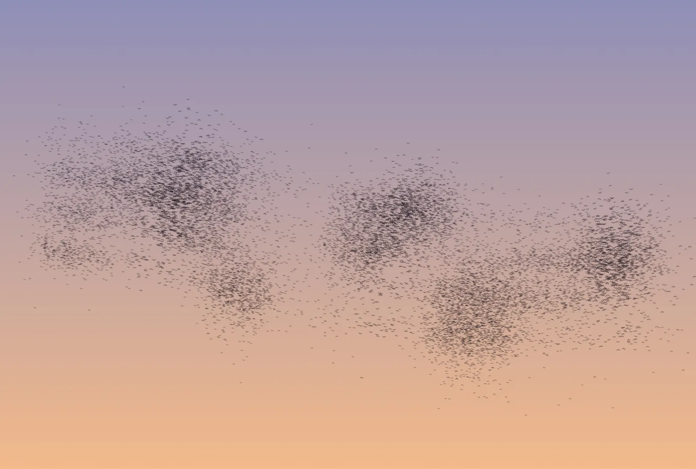
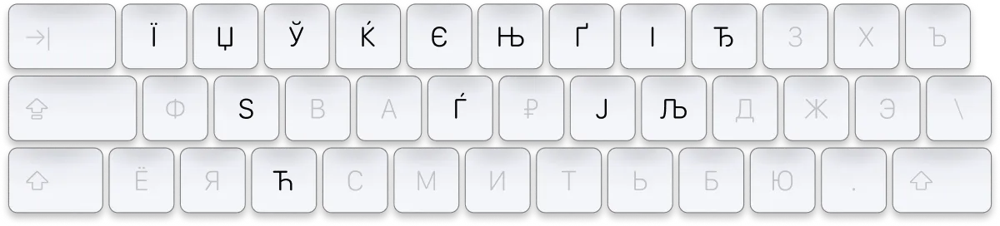
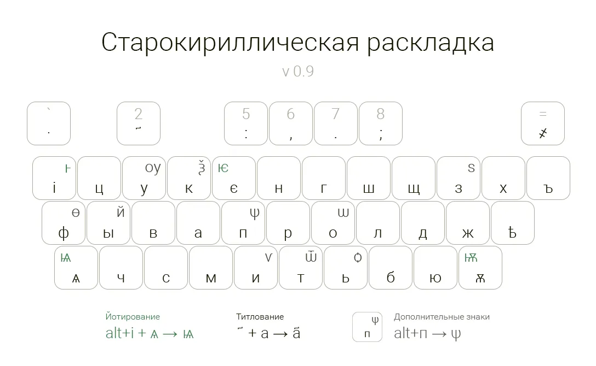
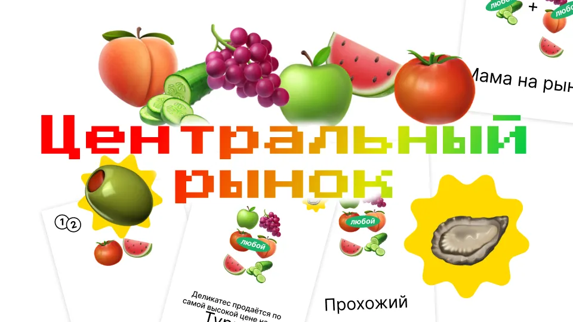
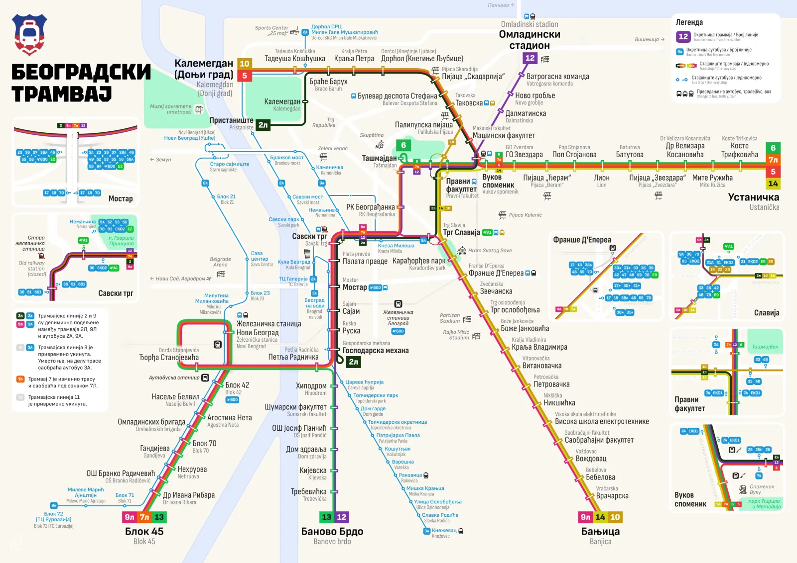

Projects
Проекты
Things I make around language that are not languages themselves: tools to write and see with, keyboard layouts for scripts that lack them, a board game and a map.
Всё, что я делаю вокруг языка, но что само языком не является: инструменты, чтобы писать и смотреть, раскладки для письменностей, которым их не хватает, настольная игра и карта.

Viossa · Murmuration is an art-script for Viossa, a language that grew out of people mixing their native tongues. Every sound is four parallel lines of different weight; the signs flow into one ribbon, and a flock of starlings draws it, word by word.
Viossa · мурмурация — арт-скрипт для Viossa, языка, который вырос из того, что люди смешивали свои родные языки. Каждый звук — четыре параллельные линии разной толщины, знаки сливаются в одну ленту, а рисует её стая скворцов, слово за словом.

Slavic Layout is a keyboard layout for typing Serbian, Belarusian, Ukrainian and Macedonian letters on the familiar Russian ЙЦУКЕН, built on top of Ilya Birman’s Typographic Layout.
Славянская раскладка — чтобы набирать сербские, белорусские, украинские и македонские буквы на привычной русской ЙЦУКЕН. Сделана на основе Типографской раскладки Ильи Бирмана.

Old Church Slavonic is a keyboard layout for the old Cyrillic letters, from ѧ to ѡ — so that they stop turning up in texts as pictures, uncopyable fonts or wrong characters.
Старокириллическая — раскладка, чтобы набирать буквы кириллицы от ѧ до ѡ, а не вставлять их в тексты картинками, некопируемыми шрифтами или чужими знаками.

Central Market is a board game for families: over six market days you buy produce wholesale and sell it at your stall. The first version is ready to print.
Центральный рынок — настольная игра для детей и родителей: шесть рыночных дней закупаешь товар оптом и продаёшь его со своего прилавка. Первую версию можно скачать и распечатать.

Belgrade Tram Map is a diagram of the tram network in Belgrade, drawn over several iterations. Ilya Birman reviewed it in the Gorbunov Bureau’s Advice column (in Russian).
Карта трамваев Белграда — схема трамвайной сети Белграда, нарисованная в несколько итераций. Её разобрал Илья Бирман в «Советах» Бюро Горбунова.